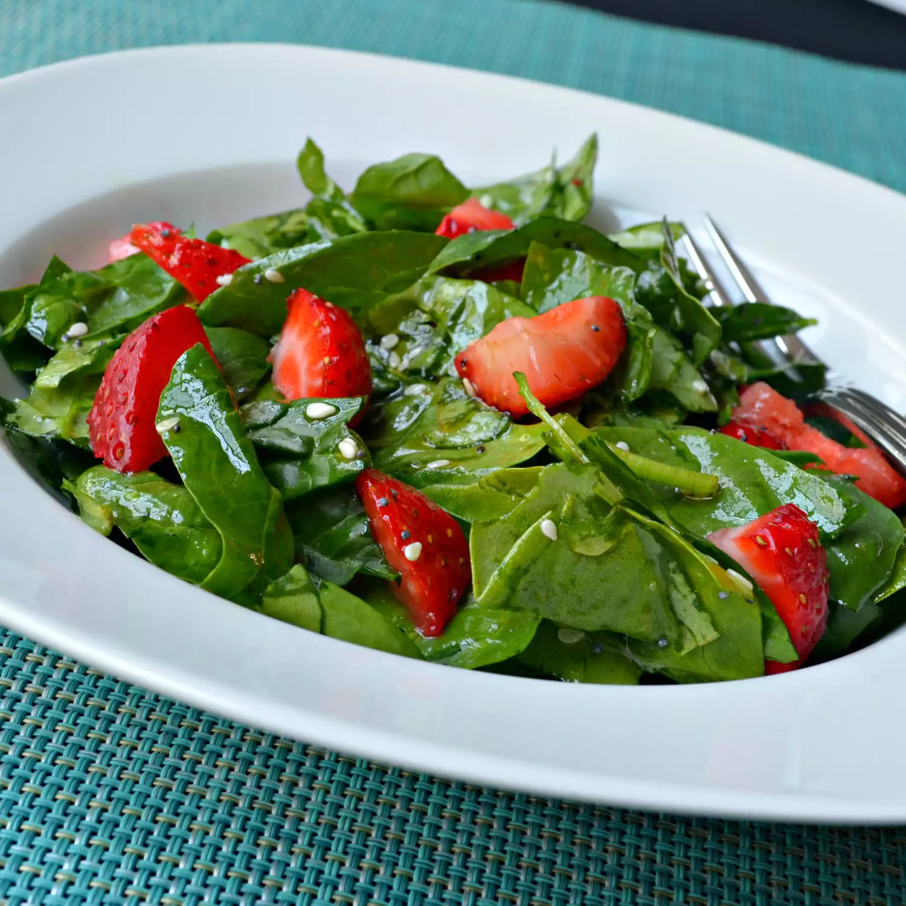

Spinach Strawberry salad
Home

This is sald
um :/
Ingredients
-
2 bunches spinach, rinsed and torn into bite-size pieces
-
4 cups sliced strawberries
-
1/2 cup vegetable oil
-
1/2 cup white sugar
-
1/4 cup white wine vinegar
-
2 tablespoons sesame seeds
-
1 tablespoon poppy seeds
- 1/4 teaspoon paprika
- Toss spinach and strawberries together in a large bowl.
-
Whisk oil, sugar, vinegar, sesame seeds, poppy seeds, and paprika together in a medium bowl; pour over spinach and strawberries, and toss to coat.